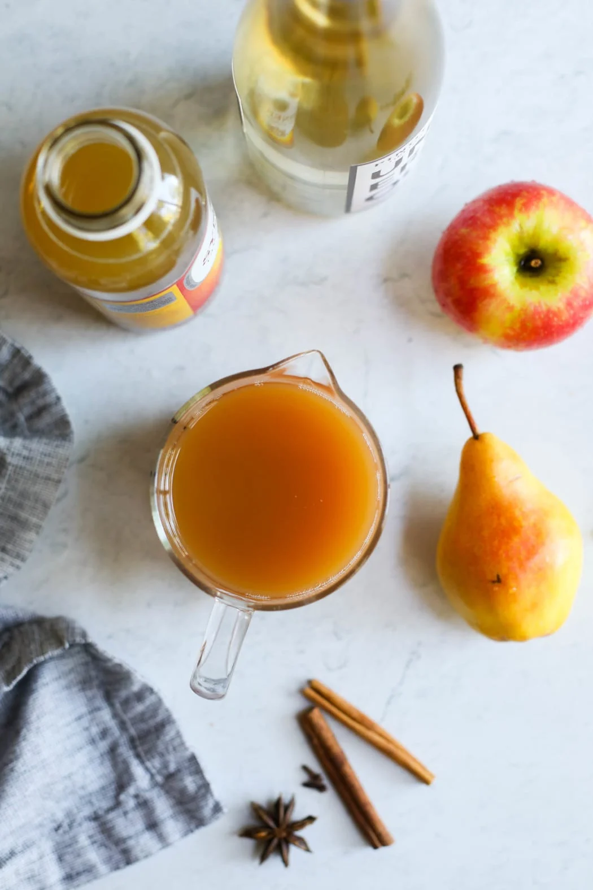
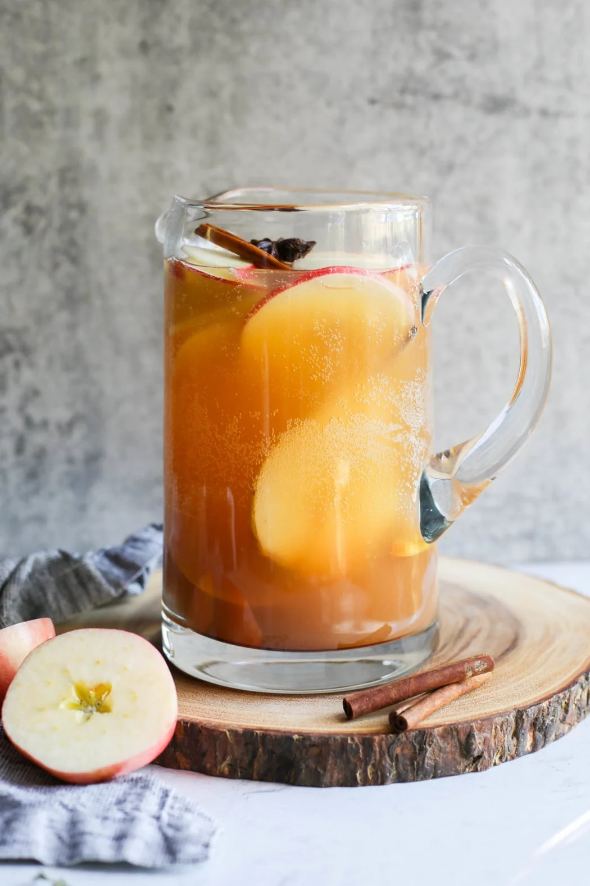
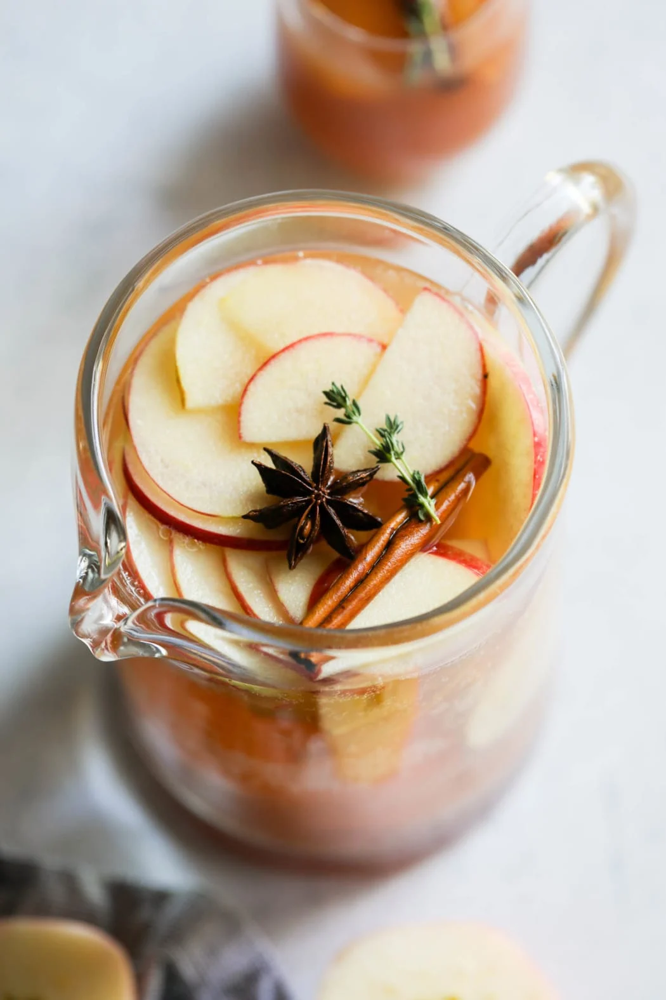

Ingredients
- 1 medium apple, any variety
- 1 medium pear, any variety
- 2–4 cinnamon sticks (optional)
- 2 whole star anise (optional)
- 1 (750 ml) bottle dry white wine, such as Pinot Grigio, Pinot Gris, or Sauvignon Blanc
- 2 cups apple cider
- 1 (16 ounce) bottle ginger-flavor kombucha or ginger beer
Directions
- Thinly slice the apple and pear. Add the apple and pear slices to a large pitcher along with the cinnamon sticks and star anise (if using).
- Add the wine, apple cider, and kombucha to the pitcher; stir gently
- Cover and refrigerate at least 1 hour and up to 24 hours.
- To serve, divide chilled sangria and fruit among 8 glasses, spooning some of the fruit into each glass. If desired, top each glass with a splash of sparkling water to add some fresh bubbles. Garnish servings with a cinnamon stick, star anise, and/or a sprig of thyme. Serve chilled.